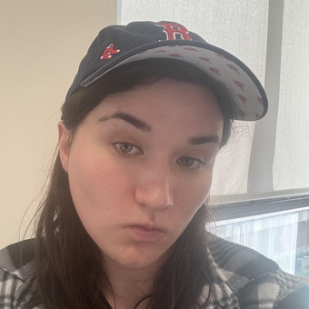

Associate Professor of Physics
Brandeis University
Many-body physics, quantum information, & gravity
I've long been fascinated by physics and information processing. In my day job, I spend a lot of time thinking about the intersection of many-body physics, quantum information, and gravity. Some of my long-standing focus areas include the emergence of gravity from entanglement, the efficient simulation of quantum many-body systems using tensor networks, and the out-of-equilibrium dynamics of quantum information. I am also very interested in artificial intelligence, including the "physics" of it, how we may use it to do better science, and how we can develop it safely.
These are some recent topics of interest. All my papers can be found on arXiv.
How does quantum information spread and scramble in strongly interacting many-body systems? This includes out-of-time-order correlators, spectral statistics, and connections to random matrix theory.
View papers →Probing holographic duality and gravitational phenomena—wormholes, black holes—using quantum processors and near-term quantum hardware, primarily via the Sachdev-Ye-Kitaev model.
View papers →Quantum glass transitions in high dimensions, spin glass physics, and the rich phase structure of disordered quantum matter, including competition between glassy and conventional order.
View papers →The emergence of spacetime geometry from quantum entanglement, including entanglement entropy and minimal surfaces, wormhole geometries as quantum information structures, and holographic measurement.
View papers →Tensor network methods—especially MERA—as variational ansätze for quantum many-body states and as explicit realizations of holographic geometry in lattice systems.
View papers →Slides from selected lectures and seminars.
University of Rhode Island
Online
Brian Khor
Postdoctoral Researcher

Valerie Bettaque
Ph.D. Student
Nadie Li
Ph.D. Student
Shiyong Guo
Ph.D. Student
Allison Powell
Ph.D. Student
Lectures, seminars, and discussions on quantum information, gravity, and more.